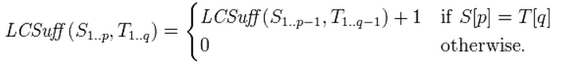
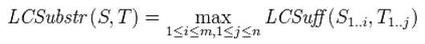

The mark for each lab is posted in this page. If you have any problems about the marks of the labs, please contact us as soon as possible.
Problem. Find the longest common substring
Given two strings, S of length m and T of length n, find the longest string which is the substring of both S and T.
string1 = file123454321:///home/gms8994/Music/t.A.T.u./ string2 = :///home/gms8994/Music222/nina%20sky/
The longest common substring is ":///home/gms8994/Music".
Solution
One good way of solving it is dynamic programming. More specifically, first we define LCSuff(S1..p ,T1..q ) as the longest common suffix for the pair of string prefixes of S1..p and T1..q. And the following equation holds:

As a result, we can iteratively get the LCSuff values for any pair of p∈[1,m] and q∈[1,n].
For the example strings "ABAB" and "BABA":
| A | B | A | B | ||
|---|---|---|---|---|---|
| 0 | 0 | 0 | 0 | 0 | |
| B | 0 | 0 | 1 | 0 | 1 |
| A | 0 | 1 | 0 | 2 | 0 |
| B | 0 | 0 | 2 | 0 | 3 |
| A | 0 | 1 | 0 | 3 | 0 |
Finally, note that the maximal of these longest common suffixes of possible prefixes must be the longest common substrings of S and T. These are shown on diagonals, in red, in the table. For this example, the longest common substrings are "BAB" and "ABA".

Based on idea above, you may try to finish the following subroutine following the guidance.
sub lc_substr { my ($str1, $str2) = @_; my $l_length = 0; # length of longest common substring my $len1 = length $str1; my $len2 = length $str2; my @char1 = (undef, split(//, $str1)); # $str1 as array of chars, indexed from 1 my @char2 = (undef, split(//, $str2)); # $str2 as array of chars, indexed from 1 my @lc_suffix; # "longest common suffix" table my @substrings; # list of common substrings of length $l_length for my $n1 ( 1 .. $len1 ) { for my $n2 ( 1 .. $len2 ) { if ($char1[$n1] eq $char2[$n2]) { # We have found a matching character. Is this the first matching character, or a # continuation of previous matching characters? If the former, then the length of # the previous matching portion is undefined; set to zero. # In either case, declare the match to be one character longer than the match of # ...characters preceding this character. # If the resulting substring is longer than our previously recorded max length ... # ... we record its length as our new max length ... # ... and clear our result list of shorter substrings. # If this substring is equal to our longest ... # ... add it to our list of solutions. } } } } return @substrings; }
And you can find the answer here.
Give the regular expression that matches the requirments.
Example
Match the pattern "xxx.xxx.xxx.xxx", "xxx" can be any number between 0 and 999.
Answer: ^\d{1,3}\.\d{1,3}\.\d{1,3}\.\d{1,3}
Task1
Match all the IPv4 address in the form of "xxx.xxx.xxx.xxx", "xxx" can be any number between 0 and 255.
Task2
Exclude all the strings containing a part in the form of "abba". It means we will exclude all the words like: trillion, unfitting, grammar, inning.
Task3
Matches a date in yyyy-mm-dd format between 1900-01-01 and 2099-12-31, with the separator "-".
Task4
Match words in the form of "ab...ba", we don't care about what appears in (...). For example: telnet civic deedeed degged kakkak level murdrum noon reviver sooloos terret.
Please submit you lab8.txt using CASS on or before 10:00 Saturday (18-Apr-2014). You should check that your program can be executed properly on the CS Lab 2 (4214) machines.
Any inquiry please contact your TAs by email (hzhangan@cse.ust.hk).